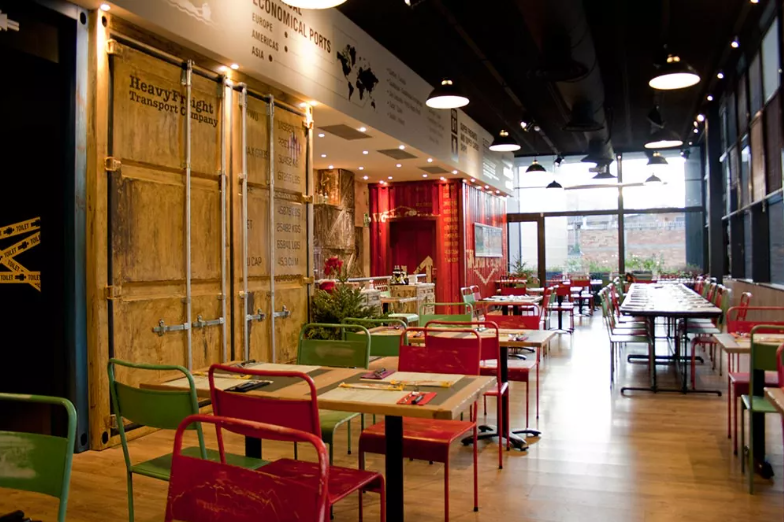
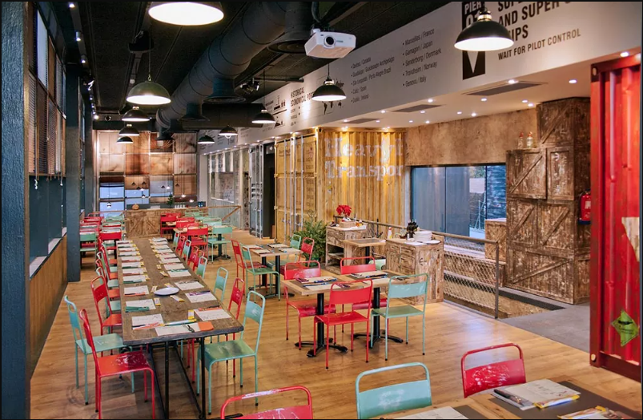
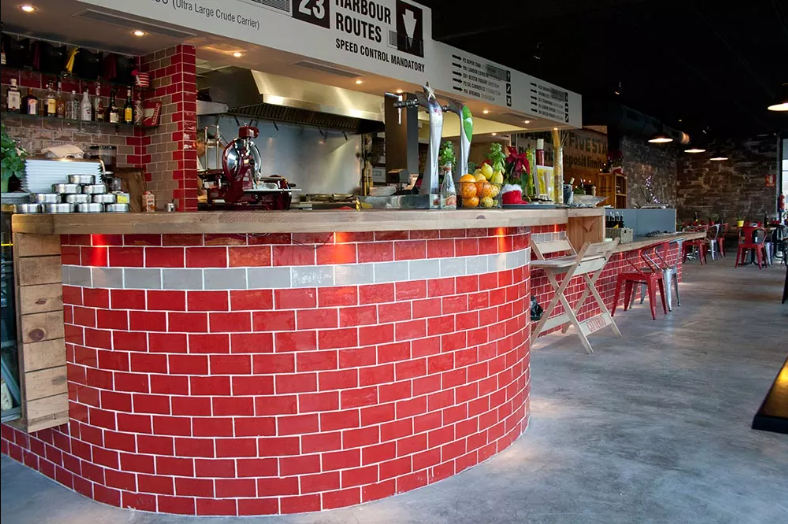
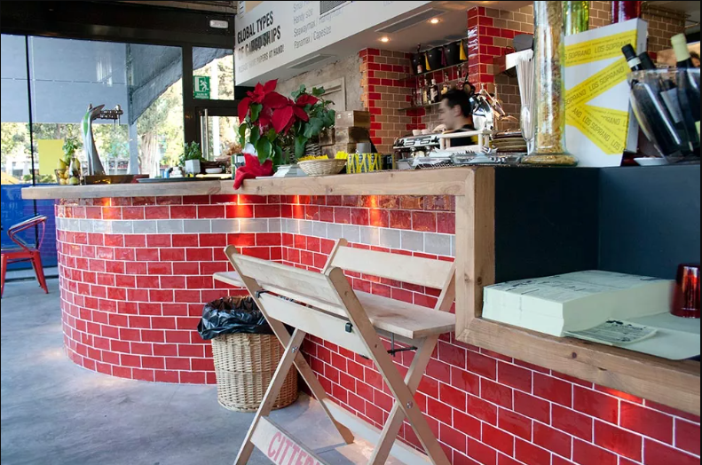
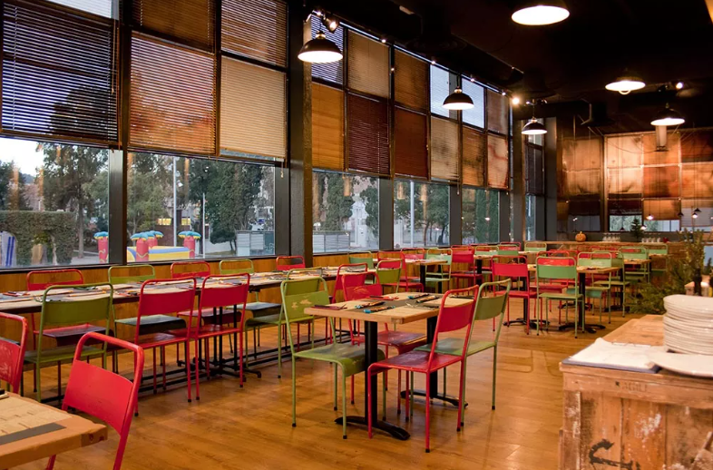
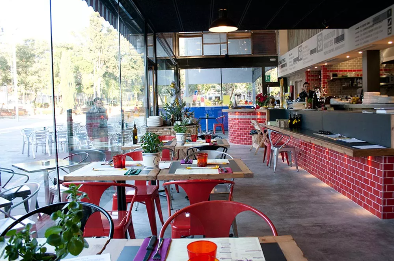
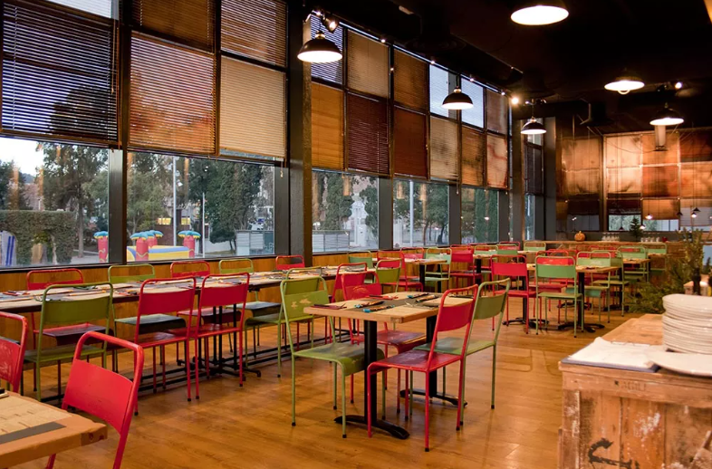
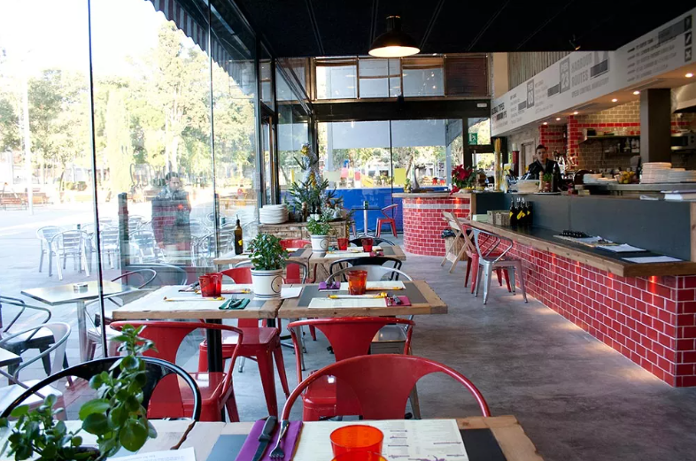

Bienvenidos a nuestra pizzería, donde el amor por la pizza es lo que nos mueve. Desde el primer día, nos hemos dedicado a preparar las pizzas más deliciosas y auténticas, utilizando ingredientes frescos y de alta calidad.
Nuestra pasión por la pizza se extiende más allá de nuestra cocina. Creemos que la pizza es una forma de arte, y estamos comprometidos en brindar una experiencia única y satisfactoria a nuestros clientes.
Nuestro equipo está conformado por expertos en la preparación de pizza, desde los que se encargan de la masa hasta los que se encargan de la selección de ingredientes. Todos comparten nuestra visión de hacer la mejor pizza posible.
Nos enorgullece ofrecer una amplia variedad de sabores y estilos de pizza para satisfacer a todos los gustos. Desde la clásica cuatro quesos hasta la exótica La Mexicana y la especialidad de la casa pizza con loroco tenemos algo para todos.
Además de nuestra deliciosa pizza, ofrecemos una variedad de opciones de bebidas y postres para completar su experiencia en nuestra pizzería. También nos esforzamos por brindar un servicio excepcional y amable a todos nuestros clientes.
Gracias por elegirnos como su pizzería de confianza. Esperamos tener el placer de servirle pronto y hacer que su próxima comida sea inolvidable.
   
  
 